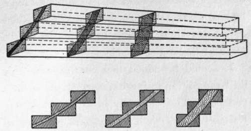

The Propeller. Part 3
Description
This section is from the book "The New Art Of Flying", by Waldemar Kaempffert. Also available from Amazon: The New Art of Flying.
The Propeller. Part 3
Like the marine turbine, the aerial engine runs too fast for the best propeller speeds. The Wright brothers overcame this difficulty by the somewhat unmechanical expedient of chain gearing, one chain being crossed. A French firm has utilised the half-time cam-shaft of the engine, suitably enlarged, to drive the propeller, thus getting a speed reduction of two to one, but the Blériot, Antoinette, Farman, Voisin, and indeed most types continue to drive the propeller directly without reduction. It is probable that the direct drive will prevail, for any form of gearing, however simple, introduces an element of risk with doubtful benefits. At present there is scarcely any machine which has the propeller well under control, so that it can be stopped and started and altered in speed, without stopping the motor. This is due, of course, to the weight of clutches, change-speed gears, etc. Probably some enterprising engineer may produce a suitable gear for this purpose before long.
In this outline we have used the word " efficiency." How is efficiency determined, may well be asked. The true efficiency of a propeller driving an aeroplane is the ratio between the work of propulsion and the energy consumed, the work of propulsion being the product of the travel of the aeroplane multiplied by the resistance opposed to its forward movement. The efficiency is measured at a fixed point by causing the propeller to revolve, without advancing or receding, and measuring the thrust produced, in the direction of the axis, by a given horse-power.
The conditions of the experiment are very different from those of rapid flight through the air, in which the friction between the air and the propeller is enormously increased; no account is taken of the resistance opposed by the air to the forward movement of the aeroplane. In fact, no work of propulsion is performed or even imitated, the sole result being a thrust which may be employed for propulsion. Under these conditions the propeller is comparable with a lever which supports a motionless weight and thus exerts a stress, but performs no work. For this reason absolute reliance cannot be placed on the results of many propeller tests.
A fair imitation of the conditions of flight as they directly affect the propeller itself can be obtained by placing the propeller in a tube in which an air current of any desired velocity is produced by blowers. Some experimenters mount the propeller so that it revolves freely in air and yet drives a boat or a road vehicle.
Some of the best results obtained, in recent times, of thrust for horse-power applied are: Maxim, nine pounds; Langley, about seven pounds; Spencer (with a Maxim type propeller), six pounds; Farman, and other experimenters in France, six pounds (about).
It is now a widely recognised fact that the aerial propellers at present in use are lamentably inefficient. Most aeroplane successes, except those of the Wrights, are achieved at an enormous cost; for the propellers waste probably more than half the power applied.
A propeller of large diameter and slow revolution is more efficient than one of small diameter and high speed, a circumstance borne out especially in the case of the Wright machine, in which more thrust is obtained per unit of power than in any other type (Fig. 43).
We are beginning to realise that the abuse lavished on the motor should be bestowed in very large measure on the propeller. The internal-combustion engine fitted to the aeroplane must have all the vital parts cut to the narrowest margin, and must be worked at very nearly break-down rate in order to produce an enormous amount of surplus power wasted by the screw. For this reason all our more serious investigators are carrying out scientific experiments to determine propeller efficiency. Perhaps when they have completed their work we may be able to build a propeller which will drive a flying-machine with something like economy of power.
The construction of the aerial propeller is the more delicate, because it depends to a large extent upon the peculiarities of the vessel to which it is to be attached. The methods employed in all establishments are the same; yet a Chauvière propeller is very different from a Wright propeller.
Fig. 42. How the Wright propeller is cut from three planks laid upon one another fan-wise.
A Wright propeller is made of American spruce and is of very light construction. The extremities of the blades are covered with canvas, which is varnished with the rest, for the purpose of increasing the rigidity of the thin outer ends. The whole propeller is built up of three planks arranged as shown in Fig. 42, so that they overlap like the sticks of a fan, to an extent which diminishes as the distance from the hub increases. The superfluous parts of the wood, represented by the darker and triangular areas of the upper diagram in Fig. 42, are then cut away, and the curvature is tested at every point by patterns.
Chauvière propellers are made of ash, fumed oak, and walnut, and include six or seven overlapping planks. The finished propeller contains only about eight and one half per cent of the wood of the original planks.
It should be added that constructors show little disposition to furnish exact details of their methods. Their industry is so new that they jealously guard their secrets, for which reticence they cannot be blamed.
Propellers are also made of metal. In these the blades are soldered or riveted to the arms, which are steel tubes riveted to the hub. The blades are shaped by hammering them upon a form. In some cases they are cast, or twisted into shape, but this construction is not so good.
Continue to: